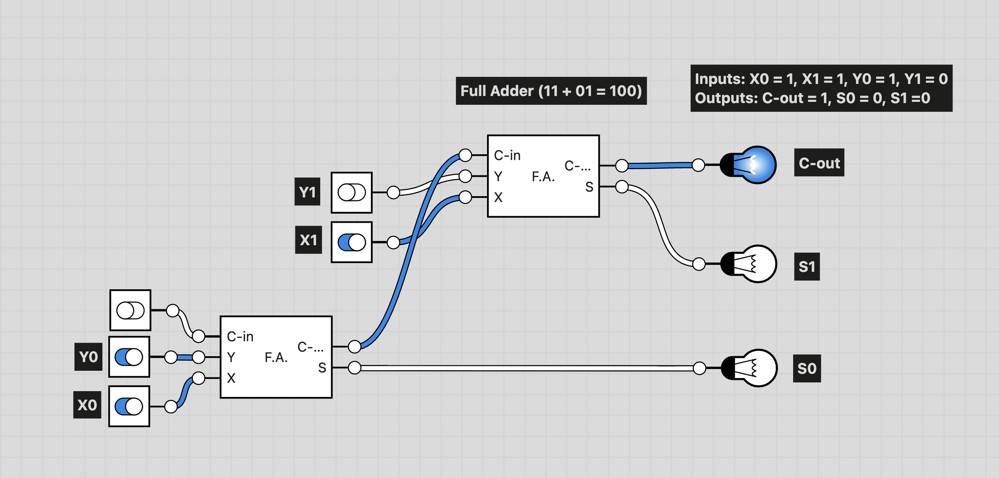
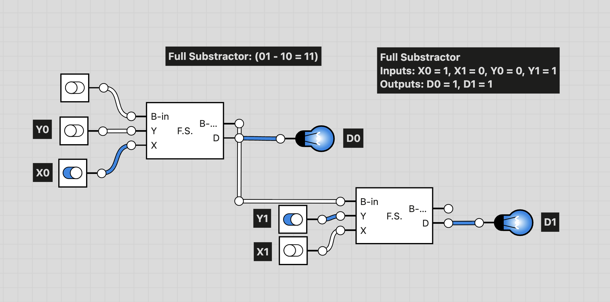

2-Bit Logic Circuit Model
In this digital logic project, designed and analyzed 2-bit adders and subtractors using combinational logic and carry/borrow propagation.
← Back to ProjectsDiagrams

Fig 1.1 2-Bit Adder

Fig 1.2 2-Bit Subtractor
A Word on the 2-Bit Adder
As can be seen in Fig 1.1, the 2-bit adder circuit consists of two full adders connected in series. The least significant bit (LSB) adder takes the two LSBs of the input numbers along with an initial carry-in of 0. In the example used, the two bits are 1 (Y0) and 1(X0). The sum output from this adder represents the LSB of the final result, while the carry-out is fed into the most significant bit (MSB) adder. The MSB adder then processes the two MSBs of the input numbers along with the carry from the LSB adder to produce the final sum and carry-out. This is directly representative of how "normal" manual addition (whether binary or decimal) works, where carries are added to the next higher place value.
Reflection
In-class Discussions
The extensive discussions we had in class about a seemingly simple question ("What is a computer?") made me appreciate more the importance of always questioning my assumptions. I had made up my mind that a computer has to be in a physical state because I couldn't imagine anything I could call a computer without being in a phsyical state. However, when my classmate Harry mentioned the idea of a computer being a state of computing, I had to reconsider the assumptions I was making to lead me to my definition. When I finally evaluated myself to see what I really knew to be a computer (by answering if I think different things are computers), I found that Harry's definition actually fit my beliefs better. That also made me revisit the discussion that came up in class about knowledge and belief. This, and many other discussions we had in class, made me realize that, in some cases, I didn't believe what I knew to be true deep down.
Pre-class Readings
The pre-class reading about logic gates impressed me most, especially when coupled with actually building a logic gate circuit in the Maker's Lab. I finally saw (and understood) the simplest, most basic, most fundamental, functional part of a computer in real life. It sounds very theoritical when I learn that computers use booleans (1s and 0s) to do everything they do. While I understand how code translates into booleans, I struggled to understood how abstract operations, like arthimetic operations (adding, substracting, ...), can be accomplished using just booleans. On top of that, I wondered exactly how the boolean logic meets the physical world, the hardware we call the computer. When I read about logic gates (and watched many Youtube videos about them), I finally saw how that works. Now I appreciate more the truth that anything that is logically possible, a powerful enough computer can do it. I even found a video of a computer made from water!
Works Cited
1. Alicedew. (2025, November 20). Logic gates explained: Types, truth tables, and applications for beginners. E. E. Eng. Retrieved from https://www.electrical-info.net/2025/11/logic-gates.html
2. Lu, J., & Lopes, P. (2022). Integrating living organisms in devices to implement care-based interactions. Proceedings of the 2022 ACM Designing Interactive Systems Conference, 1, 13. https://doi.org/10.1145/3526113.3545629
3. Mould, S. (2021, April 23). I made a water computer and it actually works [Video]. YouTube. https://www.youtube.com/watch?v=IxXaizglscw